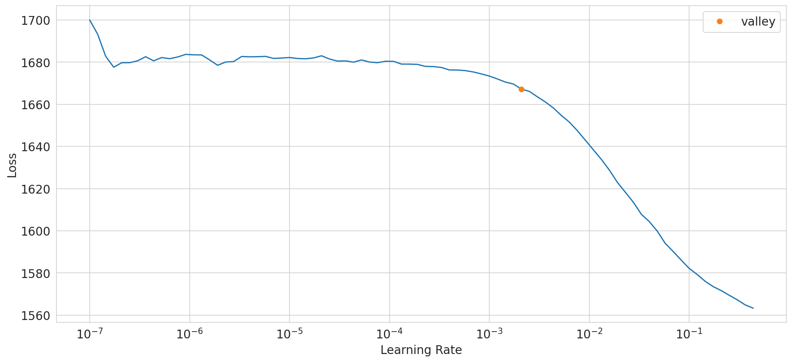
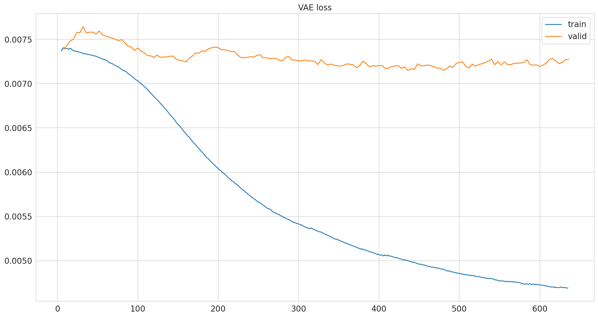
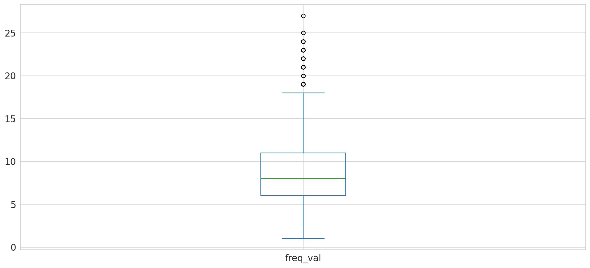
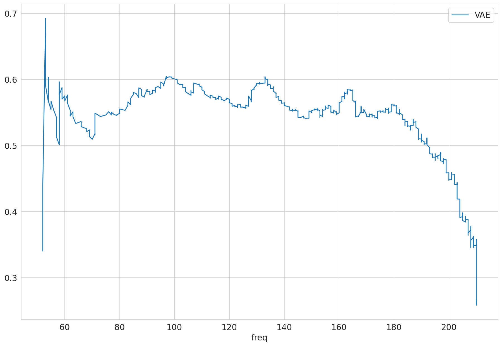

Variational Autoencoder#
pimmslearn - INFO Experiment 03 - Analysis of latent spaces and performance comparisions
Papermill script parameters:
# files and folders
# Datasplit folder with data for experiment
folder_experiment: str = 'runs/example'
folder_data: str = '' # specify data directory if needed
file_format: str = 'csv' # file format of create splits, default pickle (pkl)
# Machine parsed metadata from rawfile workflow
fn_rawfile_metadata: str = 'data/dev_datasets/HeLa_6070/files_selected_metadata_N50.csv'
# training
epochs_max: int = 50 # Maximum number of epochs
batch_size: int = 64 # Batch size for training (and evaluation)
cuda: bool = True # Whether to use a GPU for training
# model
# Dimensionality of encoding dimension (latent space of model)
latent_dim: int = 25
# A underscore separated string of layers, '256_128' for the encoder, reverse will be use for decoder
hidden_layers: str = '256_128'
# force_train:bool = True # Force training when saved model could be used. Per default re-train model
patience: int = 50 # Patience for early stopping
sample_idx_position: int = 0 # position of index which is sample ID
model: str = 'VAE' # model name
model_key: str = 'VAE' # potentially alternative key for model (grid search)
save_pred_real_na: bool = True # Save all predictions for missing values
# metadata -> defaults for metadata extracted from machine data
meta_date_col: str = None # date column in meta data
meta_cat_col: str = None # category column in meta data
# Parameters
model = "VAE"
latent_dim = 10
batch_size = 64
epochs_max = 300
hidden_layers = "64"
sample_idx_position = 0
cuda = False
save_pred_real_na = True
fn_rawfile_metadata = "https://raw.githubusercontent.com/RasmussenLab/njab/HEAD/docs/tutorial/data/alzheimer/meta.csv"
folder_experiment = "runs/alzheimer_study"
model_key = "VAE"
Some argument transformations
{'folder_experiment': 'runs/alzheimer_study',
'folder_data': '',
'file_format': 'csv',
'fn_rawfile_metadata': 'https://raw.githubusercontent.com/RasmussenLab/njab/HEAD/docs/tutorial/data/alzheimer/meta.csv',
'epochs_max': 300,
'batch_size': 64,
'cuda': False,
'latent_dim': 10,
'hidden_layers': '64',
'patience': 50,
'sample_idx_position': 0,
'model': 'VAE',
'model_key': 'VAE',
'save_pred_real_na': True,
'meta_date_col': None,
'meta_cat_col': None}
{'batch_size': 64,
'cuda': False,
'data': Path('runs/alzheimer_study/data'),
'epochs_max': 300,
'file_format': 'csv',
'fn_rawfile_metadata': 'https://raw.githubusercontent.com/RasmussenLab/njab/HEAD/docs/tutorial/data/alzheimer/meta.csv',
'folder_data': '',
'folder_experiment': Path('runs/alzheimer_study'),
'hidden_layers': [64],
'latent_dim': 10,
'meta_cat_col': None,
'meta_date_col': None,
'model': 'VAE',
'model_key': 'VAE',
'out_figures': Path('runs/alzheimer_study/figures'),
'out_folder': Path('runs/alzheimer_study'),
'out_metrics': Path('runs/alzheimer_study'),
'out_models': Path('runs/alzheimer_study'),
'out_preds': Path('runs/alzheimer_study/preds'),
'patience': 50,
'sample_idx_position': 0,
'save_pred_real_na': True}
Some naming conventions
Load data in long format#
pimmslearn.io.datasplits - INFO Loaded 'train_X' from file: runs/alzheimer_study/data/train_X.csv
pimmslearn.io.datasplits - INFO Loaded 'val_y' from file: runs/alzheimer_study/data/val_y.csv
pimmslearn.io.datasplits - INFO Loaded 'test_y' from file: runs/alzheimer_study/data/test_y.csv
data is loaded in long format
Sample ID protein groups
Sample_054 A0A0C4DG76;Q5JZ08;Q9BQS7;Q9BQS7-2;Q9BQS7-3;Q9BQS7-4 16.157
Sample_137 F5GY87;F5GZ38;F5GZH3;F5H0R6;F5H114;F5H1B8;F5H3M1;F5H866;Q9UF11;Q9UF11-2;Q9UF11-3;Q9UF11-4 15.642
Sample_088 B1AMW1;H0YDI1;P19256;P19256-2;P19256-3 14.835
Sample_057 P14618 19.691
Sample_199 P01912;Q5Y7A7 17.613
Name: intensity, dtype: float64
Infer index names from long format
pimmslearn - INFO sample_id = 'Sample ID', single feature: index_column = 'protein groups'
load meta data for splits
| _collection site | _age at CSF collection | _gender | _t-tau [ng/L] | _p-tau [ng/L] | _Abeta-42 [ng/L] | _Abeta-40 [ng/L] | _Abeta-42/Abeta-40 ratio | _primary biochemical AD classification | _clinical AD diagnosis | _MMSE score | |
|---|---|---|---|---|---|---|---|---|---|---|---|
| Sample ID | |||||||||||
| Sample_000 | Sweden | 71.000 | f | 703.000 | 85.000 | 562.000 | NaN | NaN | biochemical control | NaN | NaN |
| Sample_001 | Sweden | 77.000 | m | 518.000 | 91.000 | 334.000 | NaN | NaN | biochemical AD | NaN | NaN |
| Sample_002 | Sweden | 75.000 | m | 974.000 | 87.000 | 515.000 | NaN | NaN | biochemical AD | NaN | NaN |
| Sample_003 | Sweden | 72.000 | f | 950.000 | 109.000 | 394.000 | NaN | NaN | biochemical AD | NaN | NaN |
| Sample_004 | Sweden | 63.000 | f | 873.000 | 88.000 | 234.000 | NaN | NaN | biochemical AD | NaN | NaN |
| ... | ... | ... | ... | ... | ... | ... | ... | ... | ... | ... | ... |
| Sample_205 | Berlin | 69.000 | f | 1,945.000 | NaN | 699.000 | 12,140.000 | 0.058 | biochemical AD | AD | 17.000 |
| Sample_206 | Berlin | 73.000 | m | 299.000 | NaN | 1,420.000 | 16,571.000 | 0.086 | biochemical control | non-AD | 28.000 |
| Sample_207 | Berlin | 71.000 | f | 262.000 | NaN | 639.000 | 9,663.000 | 0.066 | biochemical control | non-AD | 28.000 |
| Sample_208 | Berlin | 83.000 | m | 289.000 | NaN | 1,436.000 | 11,285.000 | 0.127 | biochemical control | non-AD | 24.000 |
| Sample_209 | Berlin | 63.000 | f | 591.000 | NaN | 1,299.000 | 11,232.000 | 0.116 | biochemical control | non-AD | 29.000 |
210 rows × 11 columns
Initialize Comparison#
replicates idea for truely missing values: Define truth as by using n=3 replicates to impute each sample
real test data:
Not used for predictions or early stopping.
[x] add some additional NAs based on distribution of data
protein groups
A0A024QZX5;A0A087X1N8;P35237 197
A0A024R0T9;K7ER74;P02655 208
A0A024R3W6;A0A024R412;O60462;O60462-2;O60462-3;O60462-4;O60462-5;Q7LBX6;X5D2Q8 185
A0A024R644;A0A0A0MRU5;A0A1B0GWI2;O75503 208
A0A075B6H7 97
Name: freq, dtype: int64
Produce some addional simulated samples#
The validation simulated NA is used to by all models to evaluate training performance.
| observed | ||
|---|---|---|
| Sample ID | protein groups | |
| Sample_158 | Q9UN70;Q9UN70-2 | 14.630 |
| Sample_050 | Q9Y287 | 15.755 |
| Sample_107 | Q8N475;Q8N475-2 | 15.029 |
| Sample_199 | P06307 | 19.376 |
| Sample_067 | Q5VUB5 | 15.309 |
| ... | ... | ... |
| Sample_111 | F6SYF8;Q9UBP4 | 22.822 |
| Sample_002 | A0A0A0MT36 | 18.165 |
| Sample_049 | Q8WY21;Q8WY21-2;Q8WY21-3;Q8WY21-4 | 15.525 |
| Sample_182 | Q8NFT8 | 14.379 |
| Sample_123 | Q16853;Q16853-2 | 14.504 |
12600 rows × 1 columns
| observed | |
|---|---|
| count | 12,600.000 |
| mean | 16.339 |
| std | 2.741 |
| min | 7.209 |
| 25% | 14.412 |
| 50% | 15.935 |
| 75% | 17.910 |
| max | 30.140 |
Data in wide format#
Autoencoder need data in wide format
| protein groups | A0A024QZX5;A0A087X1N8;P35237 | A0A024R0T9;K7ER74;P02655 | A0A024R3W6;A0A024R412;O60462;O60462-2;O60462-3;O60462-4;O60462-5;Q7LBX6;X5D2Q8 | A0A024R644;A0A0A0MRU5;A0A1B0GWI2;O75503 | A0A075B6H7 | A0A075B6H9 | A0A075B6I0 | A0A075B6I1 | A0A075B6I6 | A0A075B6I9 | ... | Q9Y653;Q9Y653-2;Q9Y653-3 | Q9Y696 | Q9Y6C2 | Q9Y6N6 | Q9Y6N7;Q9Y6N7-2;Q9Y6N7-4 | Q9Y6R7 | Q9Y6X5 | Q9Y6Y8;Q9Y6Y8-2 | Q9Y6Y9 | S4R3U6 |
|---|---|---|---|---|---|---|---|---|---|---|---|---|---|---|---|---|---|---|---|---|---|
| Sample ID | |||||||||||||||||||||
| Sample_000 | 15.912 | 16.852 | 15.570 | 16.481 | 17.301 | 20.246 | 16.764 | 17.584 | 16.988 | 20.054 | ... | 16.012 | 15.178 | NaN | 15.050 | 16.842 | NaN | NaN | 19.563 | NaN | 12.805 |
| Sample_001 | NaN | 16.874 | 15.519 | 16.387 | NaN | 19.941 | 18.786 | 17.144 | NaN | 19.067 | ... | 15.528 | 15.576 | NaN | 14.833 | 16.597 | 20.299 | 15.556 | 19.386 | 13.970 | 12.442 |
| Sample_002 | 16.111 | NaN | 15.935 | 16.416 | 18.175 | 19.251 | 16.832 | 15.671 | 17.012 | 18.569 | ... | 15.229 | 14.728 | 13.757 | 15.118 | 17.440 | 19.598 | 15.735 | 20.447 | 12.636 | 12.505 |
| Sample_003 | 16.107 | 17.032 | 15.802 | 16.979 | 15.963 | 19.628 | 17.852 | 18.877 | 14.182 | 18.985 | ... | 15.495 | 14.590 | 14.682 | 15.140 | 17.356 | 19.429 | NaN | 20.216 | NaN | 12.445 |
| Sample_004 | 15.603 | 15.331 | 15.375 | 16.679 | NaN | 20.450 | 18.682 | 17.081 | 14.140 | 19.686 | ... | 14.757 | NaN | NaN | 15.256 | 17.075 | 19.582 | 15.328 | NaN | 13.145 | NaN |
5 rows × 1421 columns
Add interpolation performance#
Fill Validation data with potentially missing features#
| protein groups | A0A024QZX5;A0A087X1N8;P35237 | A0A024R0T9;K7ER74;P02655 | A0A024R3W6;A0A024R412;O60462;O60462-2;O60462-3;O60462-4;O60462-5;Q7LBX6;X5D2Q8 | A0A024R644;A0A0A0MRU5;A0A1B0GWI2;O75503 | A0A075B6H7 | A0A075B6H9 | A0A075B6I0 | A0A075B6I1 | A0A075B6I6 | A0A075B6I9 | ... | Q9Y653;Q9Y653-2;Q9Y653-3 | Q9Y696 | Q9Y6C2 | Q9Y6N6 | Q9Y6N7;Q9Y6N7-2;Q9Y6N7-4 | Q9Y6R7 | Q9Y6X5 | Q9Y6Y8;Q9Y6Y8-2 | Q9Y6Y9 | S4R3U6 |
|---|---|---|---|---|---|---|---|---|---|---|---|---|---|---|---|---|---|---|---|---|---|
| Sample ID | |||||||||||||||||||||
| Sample_000 | 15.912 | 16.852 | 15.570 | 16.481 | 17.301 | 20.246 | 16.764 | 17.584 | 16.988 | 20.054 | ... | 16.012 | 15.178 | NaN | 15.050 | 16.842 | NaN | NaN | 19.563 | NaN | 12.805 |
| Sample_001 | NaN | 16.874 | 15.519 | 16.387 | NaN | 19.941 | 18.786 | 17.144 | NaN | 19.067 | ... | 15.528 | 15.576 | NaN | 14.833 | 16.597 | 20.299 | 15.556 | 19.386 | 13.970 | 12.442 |
| Sample_002 | 16.111 | NaN | 15.935 | 16.416 | 18.175 | 19.251 | 16.832 | 15.671 | 17.012 | 18.569 | ... | 15.229 | 14.728 | 13.757 | 15.118 | 17.440 | 19.598 | 15.735 | 20.447 | 12.636 | 12.505 |
| Sample_003 | 16.107 | 17.032 | 15.802 | 16.979 | 15.963 | 19.628 | 17.852 | 18.877 | 14.182 | 18.985 | ... | 15.495 | 14.590 | 14.682 | 15.140 | 17.356 | 19.429 | NaN | 20.216 | NaN | 12.445 |
| Sample_004 | 15.603 | 15.331 | 15.375 | 16.679 | NaN | 20.450 | 18.682 | 17.081 | 14.140 | 19.686 | ... | 14.757 | NaN | NaN | 15.256 | 17.075 | 19.582 | 15.328 | NaN | 13.145 | NaN |
| ... | ... | ... | ... | ... | ... | ... | ... | ... | ... | ... | ... | ... | ... | ... | ... | ... | ... | ... | ... | ... | ... |
| Sample_205 | 15.682 | 16.886 | 14.910 | 16.482 | NaN | 17.705 | 17.039 | NaN | 16.413 | 19.102 | ... | NaN | 15.684 | 14.236 | 15.415 | 17.551 | 17.922 | 16.340 | 19.928 | 12.929 | NaN |
| Sample_206 | 15.798 | 17.554 | 15.600 | 15.938 | NaN | 18.154 | 18.152 | 16.503 | 16.860 | 18.538 | ... | 15.422 | 16.106 | NaN | 15.345 | 17.084 | 18.708 | NaN | 19.433 | NaN | NaN |
| Sample_207 | 15.739 | NaN | 15.469 | 16.898 | NaN | 18.636 | 17.950 | 16.321 | 16.401 | 18.849 | ... | 15.808 | 16.098 | 14.403 | 15.715 | NaN | 18.725 | 16.138 | 19.599 | 13.637 | 11.174 |
| Sample_208 | 15.477 | 16.779 | 14.995 | 16.132 | NaN | 14.908 | NaN | NaN | 16.119 | 18.368 | ... | 15.157 | 16.712 | NaN | 14.640 | 16.533 | 19.411 | 15.807 | 19.545 | NaN | NaN |
| Sample_209 | NaN | 17.261 | 15.175 | 16.235 | NaN | 17.893 | 17.744 | 16.371 | 15.780 | 18.806 | ... | 15.237 | 15.652 | 15.211 | 14.205 | 16.749 | 19.275 | 15.732 | 19.577 | 11.042 | 11.791 |
210 rows × 1421 columns
| protein groups | A0A024QZX5;A0A087X1N8;P35237 | A0A024R0T9;K7ER74;P02655 | A0A024R3W6;A0A024R412;O60462;O60462-2;O60462-3;O60462-4;O60462-5;Q7LBX6;X5D2Q8 | A0A024R644;A0A0A0MRU5;A0A1B0GWI2;O75503 | A0A075B6H7 | A0A075B6H9 | A0A075B6I0 | A0A075B6I1 | A0A075B6I6 | A0A075B6I9 | ... | Q9Y653;Q9Y653-2;Q9Y653-3 | Q9Y696 | Q9Y6C2 | Q9Y6N6 | Q9Y6N7;Q9Y6N7-2;Q9Y6N7-4 | Q9Y6R7 | Q9Y6X5 | Q9Y6Y8;Q9Y6Y8-2 | Q9Y6Y9 | S4R3U6 |
|---|---|---|---|---|---|---|---|---|---|---|---|---|---|---|---|---|---|---|---|---|---|
| Sample ID | |||||||||||||||||||||
| Sample_000 | NaN | NaN | NaN | NaN | NaN | NaN | NaN | NaN | NaN | NaN | ... | NaN | NaN | NaN | NaN | NaN | 19.863 | NaN | NaN | NaN | NaN |
| Sample_001 | NaN | NaN | NaN | NaN | NaN | NaN | NaN | NaN | NaN | NaN | ... | NaN | NaN | NaN | NaN | NaN | NaN | NaN | NaN | NaN | NaN |
| Sample_002 | NaN | 14.523 | NaN | NaN | NaN | NaN | NaN | NaN | NaN | NaN | ... | NaN | NaN | NaN | NaN | NaN | NaN | NaN | NaN | NaN | NaN |
| Sample_003 | NaN | NaN | NaN | NaN | NaN | NaN | NaN | NaN | NaN | NaN | ... | NaN | NaN | NaN | NaN | NaN | NaN | NaN | NaN | NaN | NaN |
| Sample_004 | NaN | NaN | NaN | NaN | 15.473 | NaN | NaN | NaN | NaN | NaN | ... | NaN | NaN | 14.048 | NaN | NaN | NaN | NaN | 19.867 | NaN | 12.235 |
| ... | ... | ... | ... | ... | ... | ... | ... | ... | ... | ... | ... | ... | ... | ... | ... | ... | ... | ... | ... | ... | ... |
| Sample_205 | NaN | NaN | NaN | NaN | NaN | NaN | NaN | NaN | NaN | NaN | ... | NaN | NaN | NaN | NaN | NaN | NaN | NaN | NaN | NaN | 11.802 |
| Sample_206 | NaN | NaN | NaN | NaN | NaN | NaN | NaN | NaN | NaN | NaN | ... | NaN | NaN | NaN | NaN | NaN | NaN | NaN | NaN | NaN | NaN |
| Sample_207 | NaN | NaN | NaN | NaN | NaN | NaN | NaN | NaN | NaN | NaN | ... | NaN | NaN | NaN | NaN | NaN | NaN | NaN | NaN | NaN | NaN |
| Sample_208 | NaN | NaN | NaN | NaN | NaN | NaN | 17.530 | NaN | NaN | NaN | ... | NaN | NaN | NaN | NaN | NaN | NaN | NaN | NaN | NaN | NaN |
| Sample_209 | 15.727 | NaN | NaN | NaN | NaN | NaN | NaN | NaN | NaN | NaN | ... | NaN | NaN | NaN | NaN | NaN | NaN | NaN | NaN | NaN | NaN |
210 rows × 1419 columns
| protein groups | A0A024QZX5;A0A087X1N8;P35237 | A0A024R0T9;K7ER74;P02655 | A0A024R3W6;A0A024R412;O60462;O60462-2;O60462-3;O60462-4;O60462-5;Q7LBX6;X5D2Q8 | A0A024R644;A0A0A0MRU5;A0A1B0GWI2;O75503 | A0A075B6H7 | A0A075B6H9 | A0A075B6I0 | A0A075B6I1 | A0A075B6I6 | A0A075B6I9 | ... | Q9Y653;Q9Y653-2;Q9Y653-3 | Q9Y696 | Q9Y6C2 | Q9Y6N6 | Q9Y6N7;Q9Y6N7-2;Q9Y6N7-4 | Q9Y6R7 | Q9Y6X5 | Q9Y6Y8;Q9Y6Y8-2 | Q9Y6Y9 | S4R3U6 |
|---|---|---|---|---|---|---|---|---|---|---|---|---|---|---|---|---|---|---|---|---|---|
| Sample ID | |||||||||||||||||||||
| Sample_000 | NaN | NaN | NaN | NaN | NaN | NaN | NaN | NaN | NaN | NaN | ... | NaN | NaN | NaN | NaN | NaN | 19.863 | NaN | NaN | NaN | NaN |
| Sample_001 | NaN | NaN | NaN | NaN | NaN | NaN | NaN | NaN | NaN | NaN | ... | NaN | NaN | NaN | NaN | NaN | NaN | NaN | NaN | NaN | NaN |
| Sample_002 | NaN | 14.523 | NaN | NaN | NaN | NaN | NaN | NaN | NaN | NaN | ... | NaN | NaN | NaN | NaN | NaN | NaN | NaN | NaN | NaN | NaN |
| Sample_003 | NaN | NaN | NaN | NaN | NaN | NaN | NaN | NaN | NaN | NaN | ... | NaN | NaN | NaN | NaN | NaN | NaN | NaN | NaN | NaN | NaN |
| Sample_004 | NaN | NaN | NaN | NaN | 15.473 | NaN | NaN | NaN | NaN | NaN | ... | NaN | NaN | 14.048 | NaN | NaN | NaN | NaN | 19.867 | NaN | 12.235 |
| ... | ... | ... | ... | ... | ... | ... | ... | ... | ... | ... | ... | ... | ... | ... | ... | ... | ... | ... | ... | ... | ... |
| Sample_205 | NaN | NaN | NaN | NaN | NaN | NaN | NaN | NaN | NaN | NaN | ... | NaN | NaN | NaN | NaN | NaN | NaN | NaN | NaN | NaN | 11.802 |
| Sample_206 | NaN | NaN | NaN | NaN | NaN | NaN | NaN | NaN | NaN | NaN | ... | NaN | NaN | NaN | NaN | NaN | NaN | NaN | NaN | NaN | NaN |
| Sample_207 | NaN | NaN | NaN | NaN | NaN | NaN | NaN | NaN | NaN | NaN | ... | NaN | NaN | NaN | NaN | NaN | NaN | NaN | NaN | NaN | NaN |
| Sample_208 | NaN | NaN | NaN | NaN | NaN | NaN | 17.530 | NaN | NaN | NaN | ... | NaN | NaN | NaN | NaN | NaN | NaN | NaN | NaN | NaN | NaN |
| Sample_209 | 15.727 | NaN | NaN | NaN | NaN | NaN | NaN | NaN | NaN | NaN | ... | NaN | NaN | NaN | NaN | NaN | NaN | NaN | NaN | NaN | NaN |
210 rows × 1421 columns
Variational Autoencoder#
Analysis: DataLoaders, Model, transform#
Analysis: DataLoaders, Model#
VAE(
(encoder): Sequential(
(0): Linear(in_features=1421, out_features=64, bias=True)
(1): Dropout(p=0.2, inplace=False)
(2): BatchNorm1d(64, eps=1e-05, momentum=0.1, affine=True, track_running_stats=True)
(3): LeakyReLU(negative_slope=0.1)
(4): Linear(in_features=64, out_features=20, bias=True)
)
(decoder): Sequential(
(0): Linear(in_features=10, out_features=64, bias=True)
(1): Dropout(p=0.2, inplace=False)
(2): BatchNorm1d(64, eps=1e-05, momentum=0.1, affine=True, track_running_stats=True)
(3): LeakyReLU(negative_slope=0.1)
(4): Linear(in_features=64, out_features=2842, bias=True)
)
)
Training#
Start Fit
- before_fit : [TrainEvalCallback, Recorder, ProgressCallback, EarlyStoppingCallback]
Start Epoch Loop
- before_epoch : [Recorder, ProgressCallback]
Start Train
- before_train : [TrainEvalCallback, Recorder, ProgressCallback]
Start Batch Loop
- before_batch : [ModelAdapterVAE, CastToTensor]
- after_pred : [ModelAdapterVAE]
- after_loss : [ModelAdapterVAE]
- before_backward: []
- before_step : []
- after_step : []
- after_cancel_batch: []
- after_batch : [TrainEvalCallback, Recorder, ProgressCallback]
End Batch Loop
End Train
- after_cancel_train: [Recorder]
- after_train : [Recorder, ProgressCallback]
Start Valid
- before_validate: [TrainEvalCallback, Recorder, ProgressCallback]
Start Batch Loop
- **CBs same as train batch**: []
End Batch Loop
End Valid
- after_cancel_validate: [Recorder]
- after_validate : [Recorder, ProgressCallback]
End Epoch Loop
- after_cancel_epoch: []
- after_epoch : [Recorder, EarlyStoppingCallback]
End Fit
- after_cancel_fit: []
- after_fit : [ProgressCallback, EarlyStoppingCallback]
Adding a EarlyStoppingCallback results in an error. Potential fix in
PR3509 is not yet in
current version. Try again later
SuggestedLRs(valley=0.0020892962347716093)

dump model config
| epoch | train_loss | valid_loss | time |
|---|---|---|---|
| 0 | 1676.719360 | 92.527390 | 00:00 |
| 1 | 1679.373657 | 93.062195 | 00:00 |
| 2 | 1676.949097 | 93.686188 | 00:00 |
| 3 | 1676.133545 | 94.255684 | 00:00 |
| 4 | 1673.039795 | 94.542801 | 00:00 |
| 5 | 1670.273804 | 95.476013 | 00:00 |
| 6 | 1668.199463 | 95.461052 | 00:00 |
| 7 | 1666.176025 | 96.316483 | 00:00 |
| 8 | 1664.413452 | 95.424179 | 00:00 |
| 9 | 1662.902710 | 95.523338 | 00:00 |
| 10 | 1660.542358 | 95.530022 | 00:00 |
| 11 | 1658.379883 | 95.264061 | 00:00 |
| 12 | 1655.259399 | 95.687218 | 00:00 |
| 13 | 1652.147827 | 95.160530 | 00:00 |
| 14 | 1649.236084 | 94.969971 | 00:00 |
| 15 | 1643.668457 | 94.832146 | 00:00 |
| 16 | 1639.776245 | 94.683212 | 00:00 |
| 17 | 1635.404053 | 94.521446 | 00:00 |
| 18 | 1631.143188 | 94.329109 | 00:00 |
| 19 | 1625.548096 | 94.466278 | 00:00 |
| 20 | 1621.477661 | 93.997375 | 00:00 |
| 21 | 1615.194214 | 93.529945 | 00:00 |
| 22 | 1609.102417 | 93.399025 | 00:00 |
| 23 | 1602.344727 | 92.947021 | 00:00 |
| 24 | 1596.523682 | 93.284447 | 00:00 |
| 25 | 1589.968262 | 92.851677 | 00:00 |
| 26 | 1582.469727 | 92.603806 | 00:00 |
| 27 | 1574.299927 | 92.188339 | 00:00 |
| 28 | 1565.769775 | 92.169357 | 00:00 |
| 29 | 1557.351807 | 91.919678 | 00:00 |
| 30 | 1548.892944 | 92.273422 | 00:00 |
| 31 | 1539.491821 | 91.951118 | 00:00 |
| 32 | 1530.805786 | 91.996277 | 00:00 |
| 33 | 1520.954468 | 92.004700 | 00:00 |
| 34 | 1510.970581 | 92.102707 | 00:00 |
| 35 | 1501.833252 | 92.118660 | 00:00 |
| 36 | 1490.774170 | 91.642410 | 00:00 |
| 37 | 1481.946533 | 91.510353 | 00:00 |
| 38 | 1471.402222 | 91.433136 | 00:00 |
| 39 | 1461.595581 | 91.288071 | 00:00 |
| 40 | 1452.382202 | 91.825287 | 00:00 |
| 41 | 1442.444702 | 92.135925 | 00:00 |
| 42 | 1433.281372 | 92.587074 | 00:00 |
| 43 | 1423.487061 | 92.546104 | 00:00 |
| 44 | 1414.159790 | 92.862076 | 00:00 |
| 45 | 1404.290405 | 92.803047 | 00:00 |
| 46 | 1396.753052 | 93.165550 | 00:00 |
| 47 | 1387.982666 | 93.306793 | 00:00 |
| 48 | 1380.025146 | 93.405090 | 00:00 |
| 49 | 1372.231934 | 93.349594 | 00:00 |
| 50 | 1365.573608 | 93.015778 | 00:00 |
| 51 | 1358.333008 | 93.040154 | 00:00 |
| 52 | 1350.114136 | 92.891716 | 00:00 |
| 53 | 1343.107178 | 92.787743 | 00:00 |
| 54 | 1336.436157 | 92.787148 | 00:00 |
| 55 | 1329.664429 | 92.306480 | 00:00 |
| 56 | 1321.782471 | 91.945091 | 00:00 |
| 57 | 1314.970825 | 91.873466 | 00:00 |
| 58 | 1308.518433 | 91.926384 | 00:00 |
| 59 | 1301.468384 | 92.030098 | 00:00 |
| 60 | 1295.510986 | 91.985954 | 00:00 |
| 61 | 1288.790527 | 92.204056 | 00:00 |
| 62 | 1284.196533 | 92.323929 | 00:00 |
| 63 | 1277.622681 | 91.882164 | 00:00 |
| 64 | 1271.772217 | 91.910622 | 00:00 |
| 65 | 1267.335693 | 91.752975 | 00:00 |
| 66 | 1261.203979 | 91.795212 | 00:00 |
| 67 | 1256.733398 | 91.778320 | 00:00 |
| 68 | 1253.021240 | 91.555573 | 00:00 |
| 69 | 1248.523193 | 91.468018 | 00:00 |
| 70 | 1244.258179 | 91.948799 | 00:00 |
| 71 | 1240.403442 | 92.066971 | 00:00 |
| 72 | 1235.687012 | 91.569344 | 00:00 |
| 73 | 1232.330322 | 91.550499 | 00:00 |
| 74 | 1229.541138 | 91.406113 | 00:00 |
| 75 | 1226.108398 | 91.469849 | 00:00 |
| 76 | 1221.639282 | 91.580719 | 00:00 |
| 77 | 1219.014160 | 91.421509 | 00:00 |
| 78 | 1218.223877 | 91.442177 | 00:00 |
| 79 | 1214.282349 | 91.363060 | 00:00 |
| 80 | 1211.130371 | 90.918602 | 00:00 |
| 81 | 1208.196167 | 91.611504 | 00:00 |
| 82 | 1204.115601 | 91.177490 | 00:00 |
| 83 | 1200.148682 | 90.849319 | 00:00 |
| 84 | 1196.392578 | 90.998260 | 00:00 |
| 85 | 1192.090088 | 90.819984 | 00:00 |
| 86 | 1189.541626 | 90.755928 | 00:00 |
| 87 | 1185.874634 | 90.704727 | 00:00 |
| 88 | 1182.250977 | 90.790512 | 00:00 |
| 89 | 1179.196411 | 91.016014 | 00:00 |
| 90 | 1175.583618 | 90.956680 | 00:00 |
| 91 | 1172.575439 | 90.882736 | 00:00 |
| 92 | 1169.188843 | 90.487022 | 00:00 |
| 93 | 1165.922607 | 90.742287 | 00:00 |
| 94 | 1164.584473 | 91.400215 | 00:00 |
| 95 | 1161.707275 | 91.036118 | 00:00 |
| 96 | 1158.376099 | 90.618233 | 00:00 |
| 97 | 1155.799683 | 90.761803 | 00:00 |
| 98 | 1152.721680 | 90.701332 | 00:00 |
| 99 | 1150.683960 | 90.776199 | 00:00 |
| 100 | 1149.113159 | 90.779686 | 00:00 |
| 101 | 1148.787598 | 90.338539 | 00:00 |
| 102 | 1147.973022 | 90.424759 | 00:00 |
| 103 | 1145.734619 | 90.647263 | 00:00 |
| 104 | 1143.223145 | 90.711456 | 00:00 |
| 105 | 1141.306885 | 90.769440 | 00:00 |
| 106 | 1138.736450 | 90.372833 | 00:00 |
| 107 | 1136.928223 | 90.585266 | 00:00 |
| 108 | 1134.787598 | 90.075928 | 00:00 |
| 109 | 1131.970459 | 90.317497 | 00:00 |
| 110 | 1130.392456 | 90.207718 | 00:00 |
| 111 | 1127.570801 | 91.023529 | 00:00 |
| 112 | 1125.575439 | 90.735260 | 00:00 |
| 113 | 1123.153809 | 90.747337 | 00:00 |
| 114 | 1120.907593 | 90.868233 | 00:00 |
| 115 | 1119.211548 | 90.763557 | 00:00 |
| 116 | 1117.543823 | 90.639473 | 00:00 |
| 117 | 1116.029175 | 90.392776 | 00:00 |
| 118 | 1114.410156 | 90.419823 | 00:00 |
| 119 | 1112.744019 | 90.098663 | 00:00 |
| 120 | 1109.452515 | 90.323616 | 00:00 |
| 121 | 1108.074341 | 90.702812 | 00:00 |
| 122 | 1105.377930 | 90.494942 | 00:00 |
| 123 | 1103.266846 | 91.079697 | 00:00 |
| 124 | 1101.986206 | 91.219635 | 00:00 |
| 125 | 1100.280762 | 91.307220 | 00:00 |
| 126 | 1098.768311 | 90.674370 | 00:00 |
| 127 | 1097.329468 | 90.442230 | 00:00 |
| 128 | 1096.940674 | 90.944809 | 00:00 |
| 129 | 1095.301514 | 90.710464 | 00:00 |
| 130 | 1093.182983 | 90.902634 | 00:00 |
| 131 | 1091.279907 | 91.040169 | 00:00 |
| 132 | 1090.547119 | 91.179459 | 00:00 |
| 133 | 1089.375244 | 91.378769 | 00:00 |
| 134 | 1088.771851 | 91.699783 | 00:00 |
| 135 | 1086.317871 | 90.898567 | 00:00 |
| 136 | 1084.168091 | 91.327492 | 00:00 |
| 137 | 1082.679321 | 90.867493 | 00:00 |
| 138 | 1082.104126 | 91.299759 | 00:00 |
| 139 | 1081.550293 | 90.918304 | 00:00 |
| 140 | 1081.210571 | 90.902710 | 00:00 |
| 141 | 1079.778442 | 91.080322 | 00:00 |
| 142 | 1079.348877 | 91.108528 | 00:00 |
| 143 | 1077.499023 | 91.136375 | 00:00 |
| 144 | 1075.126709 | 91.206688 | 00:00 |
| 145 | 1075.123413 | 91.608231 | 00:00 |
| 146 | 1074.800293 | 90.921608 | 00:00 |
| 147 | 1073.697021 | 90.815674 | 00:00 |
| 148 | 1074.322632 | 90.868919 | 00:00 |
| 149 | 1072.617188 | 90.655228 | 00:00 |
| 150 | 1071.459473 | 90.842056 | 00:00 |
| 151 | 1070.084229 | 91.097916 | 00:00 |
| 152 | 1068.146606 | 91.640205 | 00:00 |
| 153 | 1067.248535 | 91.767746 | 00:00 |
| 154 | 1066.549927 | 91.461105 | 00:00 |
| 155 | 1065.389526 | 91.039520 | 00:00 |
| 156 | 1066.299438 | 91.225510 | 00:00 |
| 157 | 1065.404907 | 91.609215 | 00:00 |
| 158 | 1064.044800 | 91.649925 | 00:00 |
No improvement since epoch 108: early stopping
Save number of actually trained epochs
159
Loss normalized by total number of measurements#
pimmslearn.plotting - INFO Saved Figures to runs/alzheimer_study/figures/vae_training

Predictions#
create predictions and select validation data predictions
Sample ID protein groups
Sample_000 A0A024QZX5;A0A087X1N8;P35237 15.964
A0A024R0T9;K7ER74;P02655 16.645
A0A024R3W6;A0A024R412;O60462;O60462-2;O60462-3;O60462-4;O60462-5;Q7LBX6;X5D2Q8 15.821
A0A024R644;A0A0A0MRU5;A0A1B0GWI2;O75503 16.567
A0A075B6H7 17.165
...
Sample_209 Q9Y6R7 19.118
Q9Y6X5 15.832
Q9Y6Y8;Q9Y6Y8-2 19.399
Q9Y6Y9 12.057
S4R3U6 11.448
Length: 298410, dtype: float32
| observed | VAE | ||
|---|---|---|---|
| Sample ID | protein groups | ||
| Sample_158 | Q9UN70;Q9UN70-2 | 14.630 | 15.775 |
| Sample_050 | Q9Y287 | 15.755 | 16.716 |
| Sample_107 | Q8N475;Q8N475-2 | 15.029 | 14.593 |
| Sample_199 | P06307 | 19.376 | 19.041 |
| Sample_067 | Q5VUB5 | 15.309 | 15.069 |
| ... | ... | ... | ... |
| Sample_111 | F6SYF8;Q9UBP4 | 22.822 | 22.808 |
| Sample_002 | A0A0A0MT36 | 18.165 | 15.846 |
| Sample_049 | Q8WY21;Q8WY21-2;Q8WY21-3;Q8WY21-4 | 15.525 | 15.744 |
| Sample_182 | Q8NFT8 | 14.379 | 13.244 |
| Sample_123 | Q16853;Q16853-2 | 14.504 | 14.546 |
12600 rows × 2 columns
| observed | VAE | ||
|---|---|---|---|
| Sample ID | protein groups | ||
| Sample_000 | A0A075B6P5;P01615 | 17.016 | 17.314 |
| A0A087X089;Q16627;Q16627-2 | 18.280 | 17.808 | |
| A0A0B4J2B5;S4R460 | 21.735 | 22.235 | |
| A0A140T971;O95865;Q5SRR8;Q5SSV3 | 14.603 | 15.371 | |
| A0A140TA33;A0A140TA41;A0A140TA52;P22105;P22105-3;P22105-4 | 16.143 | 16.712 | |
| ... | ... | ... | ... |
| Sample_209 | Q96ID5 | 16.074 | 16.098 |
| Q9H492;Q9H492-2 | 13.173 | 13.360 | |
| Q9HC57 | 14.207 | 14.321 | |
| Q9NPH3;Q9NPH3-2;Q9NPH3-5 | 14.962 | 15.092 | |
| Q9UGM5;Q9UGM5-2 | 16.871 | 16.379 |
12600 rows × 2 columns
save missing values predictions
Sample ID protein groups
Sample_000 A0A075B6J9 15.594
A0A075B6Q5 15.880
A0A075B6R2 16.561
A0A075B6S5 16.229
A0A087WSY4 16.308
...
Sample_209 Q9P1W8;Q9P1W8-2;Q9P1W8-4 16.035
Q9UI40;Q9UI40-2 16.193
Q9UIW2 16.391
Q9UMX0;Q9UMX0-2;Q9UMX0-4 13.394
Q9UP79 15.939
Name: intensity, Length: 46401, dtype: float32
Plots#
validation data
| latent dimension 1 | latent dimension 2 | latent dimension 3 | latent dimension 4 | latent dimension 5 | latent dimension 6 | latent dimension 7 | latent dimension 8 | latent dimension 9 | latent dimension 10 | |
|---|---|---|---|---|---|---|---|---|---|---|
| Sample ID | ||||||||||
| Sample_000 | -0.795 | 1.380 | -0.859 | 0.225 | 0.052 | 1.400 | 1.265 | 0.909 | 1.041 | -0.480 |
| Sample_001 | -0.254 | 1.876 | -0.313 | -0.226 | 0.802 | 0.304 | 0.233 | 0.071 | 1.520 | -1.158 |
| Sample_002 | -0.894 | 1.448 | -0.351 | 0.067 | -0.562 | 0.273 | 1.733 | 0.631 | 0.010 | -1.520 |
| Sample_003 | -0.979 | 1.729 | -0.798 | 0.984 | -0.490 | 0.682 | 1.782 | 1.211 | 0.766 | -0.512 |
| Sample_004 | -0.296 | 2.158 | -1.363 | -0.200 | 0.413 | 0.398 | 0.963 | 1.076 | 0.523 | -0.158 |
| ... | ... | ... | ... | ... | ... | ... | ... | ... | ... | ... |
| Sample_205 | -2.035 | 0.265 | -0.958 | -0.069 | -0.442 | -1.140 | 1.463 | -1.069 | 0.025 | 0.689 |
| Sample_206 | -0.220 | -1.132 | -0.125 | -1.749 | 0.753 | 0.723 | 0.350 | -1.280 | -1.890 | -1.334 |
| Sample_207 | -0.798 | -0.022 | -2.645 | -1.921 | 0.745 | 0.189 | 0.942 | -0.924 | 0.383 | 0.729 |
| Sample_208 | -0.042 | 0.394 | -1.020 | -0.724 | 1.158 | -0.515 | 1.169 | -2.890 | 0.732 | -0.715 |
| Sample_209 | -0.053 | 0.194 | -1.344 | 0.115 | 0.375 | -0.870 | 1.912 | -1.743 | 0.224 | -1.274 |
210 rows × 10 columns

freq_val
1 12
2 18
3 50
4 82
5 108
Name: count, dtype: int64

| VAE | ||
|---|---|---|
| mean | count | |
| protein groups | ||
| A0A024QZX5;A0A087X1N8;P35237 | 0.160 | 7 |
| A0A024R0T9;K7ER74;P02655 | 1.237 | 4 |
| A0A024R3W6;A0A024R412;O60462;O60462-2;O60462-3;O60462-4;O60462-5;Q7LBX6;X5D2Q8 | 0.269 | 9 |
| A0A024R644;A0A0A0MRU5;A0A1B0GWI2;O75503 | 0.300 | 6 |
| A0A075B6H7 | 0.608 | 6 |
| ... | ... | ... |
| Q9Y6R7 | 0.352 | 10 |
| Q9Y6X5 | 0.206 | 7 |
| Q9Y6Y8;Q9Y6Y8-2 | 0.332 | 9 |
| Q9Y6Y9 | 0.393 | 15 |
| S4R3U6 | 0.453 | 24 |
1419 rows × 2 columns
| VAE | ||
|---|---|---|
| Sample ID | protein groups | |
| Sample_158 | Q9UN70;Q9UN70-2 | 1.144 |
| Sample_050 | Q9Y287 | 0.961 |
| Sample_107 | Q8N475;Q8N475-2 | -0.437 |
| Sample_199 | P06307 | -0.334 |
| Sample_067 | Q5VUB5 | -0.240 |
| ... | ... | ... |
| Sample_111 | F6SYF8;Q9UBP4 | -0.014 |
| Sample_002 | A0A0A0MT36 | -2.319 |
| Sample_049 | Q8WY21;Q8WY21-2;Q8WY21-3;Q8WY21-4 | 0.219 |
| Sample_182 | Q8NFT8 | -1.134 |
| Sample_123 | Q16853;Q16853-2 | 0.042 |
12600 rows × 1 columns
Comparisons#
Simulated NAs : Artificially created NAs. Some data was sampled and set explicitly to misssing before it was fed to the model for reconstruction.
Validation data#
all measured (identified, observed) peptides in validation data
The simulated NA for the validation step are real test data (not used for training nor early stopping)
Selected as truth to compare to: observed
{'VAE': {'MSE': 0.45779139628318505,
'MAE': 0.4310313478725259,
'N': 12600,
'prop': 1.0}}
Test Datasplit#
Selected as truth to compare to: observed
{'VAE': {'MSE': 0.48049999688904665,
'MAE': 0.4367367942236355,
'N': 12600,
'prop': 1.0}}
Save all metrics as json
{ 'test_simulated_na': { 'VAE': { 'MAE': 0.4367367942236355,
'MSE': 0.48049999688904665,
'N': 12600,
'prop': 1.0}},
'valid_simulated_na': { 'VAE': { 'MAE': 0.4310313478725259,
'MSE': 0.45779139628318505,
'N': 12600,
'prop': 1.0}}}
| subset | valid_simulated_na | test_simulated_na | |
|---|---|---|---|
| model | metric_name | ||
| VAE | MSE | 0.458 | 0.480 |
| MAE | 0.431 | 0.437 | |
| N | 12,600.000 | 12,600.000 | |
| prop | 1.000 | 1.000 |
Save predictions#
Config#
{}
{'M': 1421,
'batch_size': 64,
'cuda': False,
'data': Path('runs/alzheimer_study/data'),
'epoch_trained': 159,
'epochs_max': 300,
'file_format': 'csv',
'fn_rawfile_metadata': 'https://raw.githubusercontent.com/RasmussenLab/njab/HEAD/docs/tutorial/data/alzheimer/meta.csv',
'folder_data': '',
'folder_experiment': Path('runs/alzheimer_study'),
'hidden_layers': [64],
'latent_dim': 10,
'meta_cat_col': None,
'meta_date_col': None,
'model': 'VAE',
'model_key': 'VAE',
'n_params': 277998,
'out_figures': Path('runs/alzheimer_study/figures'),
'out_folder': Path('runs/alzheimer_study'),
'out_metrics': Path('runs/alzheimer_study'),
'out_models': Path('runs/alzheimer_study'),
'out_preds': Path('runs/alzheimer_study/preds'),
'patience': 50,
'sample_idx_position': 0,
'save_pred_real_na': True}